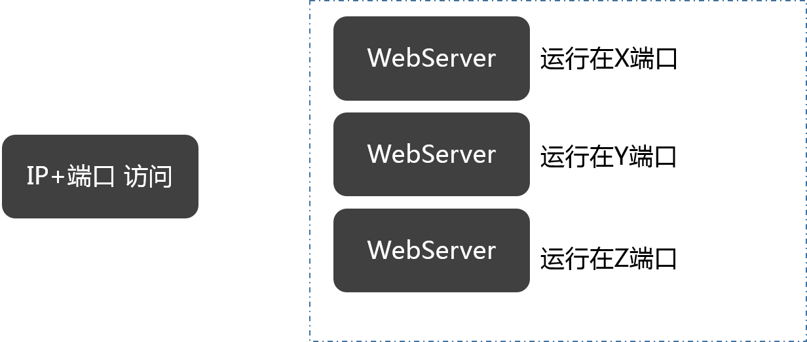
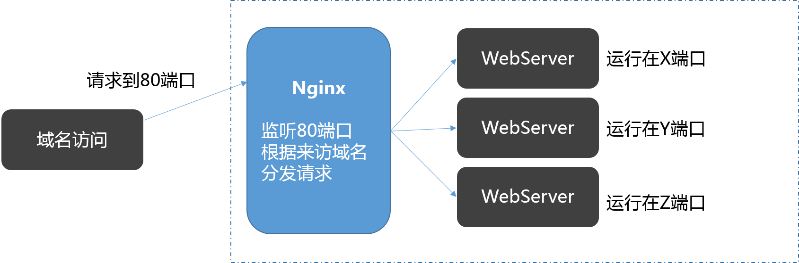
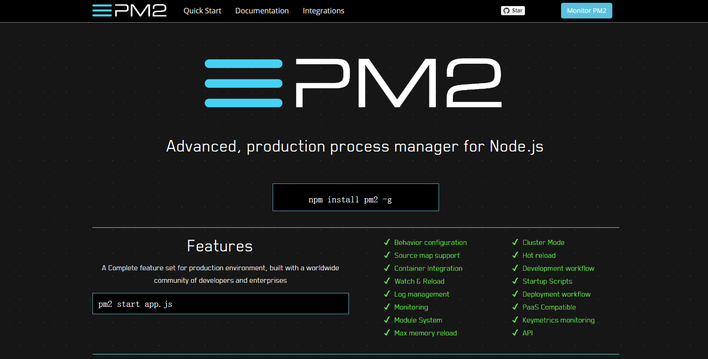

原文连接:https://www.cnblogs.com/dashnowords/p/11293667.html
目录

示例代码托管在：http://www.github.com/dashnowords/blogs
博客园地址：《大史住在大前端》原创博文目录
华为云社区地址：【你要的前端打怪升级指南】
一. 需求描述
前端工程出包后实现简易的自动化部署。
二. 预备知识
网站的建设可以使用任何自己熟悉的框架，三大框架都有自己的官方Cli工具，从代码编写到生成可用于生产环境部署的包基本都有自动化命令，各个打包工具也在零配置的追求上做了很多工作。本篇中从得到一个生产环境的包以后开始，对站点部署的相关知识进行一些介绍。
首先你需要一个Web服务器，常见的有:
NginxTomcatApache或相关集成环境XAMMP【Apache+MySQL+PHP+PERL】LAMP【Linux+Apache+MySQL+PHP】
nodejs或相关框架+守护进程ExpressKoa2
以上任何一种在服务器上运行起来后都可以担任Web服务器的角色，只是具备的扩展功能和应用场景有区别，Nginx基本上是正式环境部署的首选方案。常见的基本部署方案如下：
IP+端口访问
使用访问，可直接访问对应端口的服务，部署方式相对简单：

域名访问
使用域名访问时，通常会使用A记录进行解析，它只能映射到80端口（https时映射到443），这时就需要使用反向代理将80端口的请求分发到本地不同的内部端口来访问对应服务：

本例中使用域名+IP的方式进行部署。
三. Nodejs应用的手动部署

以Express为例，步骤如下：
- 首先通过
yarn global add express-generator或npm install express-generator -g全局安装脚手架 - 完成后在工作目录通过命令行
express mydemo --ejs生成一个使用ejs作为模板渲染引擎的express工程 - 命令行输入
cd mydemo && yarn或cd mydemo && npm install安装依赖 - 在
/bin/www文件中修改端口号为期望的端口号（自动生成的是80端口），例如3001 - 将前端工程build出的包整体复制粘贴到
/public目录中 - 此时在本地工程根目录下输入
npm start后，在浏览器中http://localhost:3001就可以访问到网站了 - 使用FTP工具(如
FlashFxp或FileZilla Client等)连接到部署机器，将mydemo目录压缩为zip包后上传到服务器指定目录。 - 使用SSH工具(如
Xshell或MobaXter)登录远程机器，假设为linux系统，输入unzip mydemo.zip解压压缩包，然后cd mydemo进入服务端工程，输入npm start即可在服务器上开启Web服务，通过ip地址:3001就可以访问到网站。 - 但是如果此时
SSH工具断开连接，就会发现express应用无法继续访问了，所以还需要一个守护进程来维持应用的启动状态，在服务端通过npm install pm2 -g来安装nodejs应用的部署管理模块，它可以实现多应用管理、Hook更新、自动重启等等许多常用功能，详细信息可以访问 【PM2官方网站】。 - 最后，在工程根目录输入
pm2 start ./bin/www即可以后台模式运行应用。
四. 基于nodejs的自动部署
4.1 package.json中的scripts
了解了手动部署的过程后，就可以通过自动化脚本来实现后续的更新和部署。nodejs工程的自动化是依赖于package.json文件中的scripts配置项来实现的，例如使用vue-cli搭建的工程中就会带有：
{
...
"scripts": {
"serve": "vue-cli-service serve",
"build": "vue-cli-service build",
"lint": "vue-cli-service lint"
},
...
}在项目根目录下打开命令行，输入npm run [script-key]或者yarn [script-key]（[script-key]指上面示例中的serve,build,lint这些键名），就会执行对应的scripts[key]对应的命令。我们先添加一条用于自动部署的脚本指令:
{
...
"scripts": {
"build": "vue-cli-service build",
"deploy" "node ./scripts/deploy/deploy.js"
},
...
}当输入npm run deploy或yarn deploy时，实际上就相当于用node去执行./scripts/deploy/deploy.js这个脚本，其中就编写了自动化发布的指令。scripts还提供了生命周期钩子，比如你对接的是一个测试环境，希望每次build后自动发布，就可以使用post钩子来实现：
{
...
"scripts": {
"build": "vue-cli-service build",
"postbuild":"npm run deploy",
"deploy" "node ./scripts/deploy/deploy.js"
},
...
}这样每次build执行完毕后，就会自动执行npm run deploy，也就是运行发布的脚本。
4.2 自动化发布脚本deploy.js
自动化发布脚本需要完成这样几个任务：
- 将打包出的
dist压缩为zip包 - 使用SSH连接部署服务器，将
zip包发上去 - 上传完毕后，启动事先写好后续任务并放在服务器上的
shell脚本来完成剩余的工作
涉及的几个模块包括实现SSH连接的node-ssh模块（底层是ssh2模块，这个模块是一个Promise封装），用于制作zip压缩包的archiver模块。node-ssh提供了上传本地目录的方法，但实际使用过程中发现并不稳定，从告警信息来看是node-stream模块在传送时将不同格式的文件转换为流时可能会出现异常，实测大约有一半概率触发，尝试修改了一些配置参数并未解决，所以采用archiver模块先压缩为单个文件后再进行上传。
参考代码如下：
const path = require('path');
const archiver =require('archiver');
const fs = require('fs');
const node_ssh = require('node-ssh');
const ssh = new node_ssh();
const srcPath = path.resolve(__dirname,'../../dist');
const configs = require('./config');
console.log('开始压缩dist目录...');
startZip();
//压缩dist目录为public.zip
function startZip() {
var archive = archiver('zip', {
zlib: { level: 5 } //递归扫描最多5层
}).on('error', function(err) {
throw err;//压缩过程中如果有错误则抛出
});
var output = fs.createWriteStream(__dirname + '/public.zip')
.on('close', function(err) {
/*压缩结束时会触发close事件，然后才能开始上传，
否则会上传一个内容不全且无法使用的zip包*/
if (err) {
console.log('关闭archiver异常:',err);
return;
}
console.log('已生成zip包');
console.log('开始上传public.zip至远程机器...');
uploadFile();
});
archive.pipe(output);//典型的node流用法
archive.directory(srcPath,'/public');//将srcPach路径对应的内容添加到zip包中/public路径
archive.finalize();
}
//将dist目录上传至正式环境
function uploadFile() {
ssh.connect({ //configs存放的是连接远程机器的信息
host: configs.host,
username: configs.user,
password: configs.password,
port:22 //SSH连接默认在22端口
}).then(function () {
//上传网站的发布包至configs中配置的远程服务器的指定地址
ssh.putFile(__dirname + '/public.zip', configs.path).then(function(status) {
console.log('上传文件成功');
console.log('开始执行远端脚本');
startRemoteShell();//上传成功后触发远端脚本
}).catch(err=>{
console.log('文件传输异常:',err);
process.exit(0);
});
}).catch(err=>{
console.log('ssh连接失败:',err);
process.exit(0);
});
}
//执行远端部署脚本
function startRemoteShell() {
//在服务器上cwd配置的路径下执行sh deploy.sh脚本来实现发布
ssh.execCommand('sh deploy.sh', { cwd:'/usr/bin/XXXXX' }).then(function(result) {
console.log('远程STDOUT输出: ' + result.stdout)
console.log('远程STDERR输出: ' + result.stderr)
if (!result.stderr){
console.log('发布成功!');
process.exit(0);
}
});
}4.3 远端脚本deploy.sh
当发布包上传至远程服务器后，剩余的工作在远端来完成就可以了，你只需要将后续的工作写进shell脚本并放在对应的目录里就可以了，本例中deploy.sh放在了服务端项目目录/mydemo中。示例如下（由于是自用系统，不考虑灰度发布等，直接暴力删除静态目录public,然后替换为新的包）：
#!/bin/bash
cd /usr1/AAA/mydemo
#删除原静态资源目录
rm -rf public
cd /usr1/AAA
#解压新的包
unzip public.zip
#将解压出的public目录移动到服务端程序目录BBB中
mv public ./mydemo提示：
如果脚本文件是在windows下编写的，请注意将编辑器中的回车换行改为
LF，windows下通常默认是CRLF，这可能会导致脚本在linux机器上无法正常执行。
至此，一个简易的自动化部署就做完了。你只需要在本地输入npm run deploy，后续的工作就会自动执行。
五. 小结
本篇只是一个简易的自动化部署流程，由于部署环境没有外网所以暂时无法借助通用的自动化流水线实现全自动的DevOps流程。PM2实际上还有非常多实用的功能，可以管理多个不同的应用实例，以集群模式运行实例，或者预设发布流程，可以直接响应Web Hook并对接指定的代码仓，在根目录下建立ecosystem.config.js配置文件就可以添加更多配置来指定pm2的表现，感兴趣的读者可以研究一下。